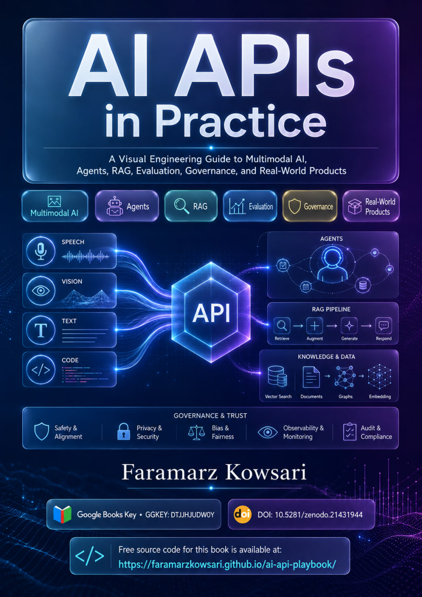

First Edition · English · 2026
Engineering Modern Intelligence Through APIs
A Visual Engineering Guide to Multimodal AI, Agents, RAG, Evaluation, Governance, and Real-World Products
This visual technical book explains how modern AI capabilities become reliable systems. It connects API architecture, structured outputs, tool use, agents, retrieval-augmented generation, multimodal computing, evaluation, governance, security, observability, cost control, and commercially useful products.
The publication moves beyond isolated prompts and demonstrations. It provides a production-oriented map for designing, evaluating, securing, governing, and commercializing AI systems across text, documents, images, audio, speech, realtime interaction, and video.